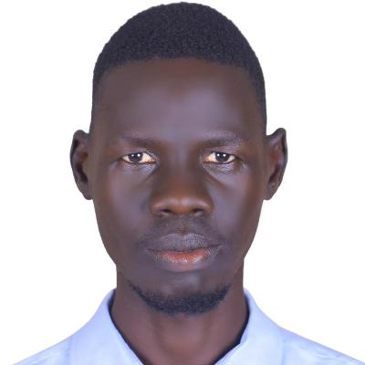

About Me
A passionate Mechanical Engineer with experirence in Engineering & Fleet management Dedicated to delivering exceptional results and driving innovation through technical excellence and systematic problem-solving approaches.
Education & Background
- MSc Candidate in Energy System Engineering - University of Juba (2024-Present)
- BSc (Hons) Mechanical Engineering - University of Juba (2015-2022)
- Certificate of Secondary Education - Rumbek National Secondary School
- Mechanical Engineer at UniPod South Sudan, University of Juba
- Currently participating in UniPod Digital Fabrication Training Program conducted by Fab Lab Rwanda

Professional Experience & Technical Skills
Work Experience
- Mechanical Engineering Technician - UniPod South Sudan (May 2023-Present)
- Production Trainee - Dar Petroleum Operating Company (Sept: 2022-Mar: 2023)
- Fleet Management Officer - Impact 54 Tech and Engineering Ltd (2021)
- Admin & Operations Officer - Helping Hands NNGO (2018-2020)
Technical Expertise
- CNC Machine Operation & Programming (Milling, Plasma Cutting, Router, laser cutting & Engraving machine)
- Engineering Design: AutoCAD, Fusion 360, Aspire, CorelDraw, ArtCAM
- Data Analysis & Mapping: ArcGIS
- Microsoft Office Suite
- Auto Mechanics & Vehicle Systems
Professional Interests
- Problem-solving and engineering challenges
- Mechanical design and prototyping
- CNC machining and digital fabrication
- Mentoring engineering students and innovators
- Energy systems and sustainable engineering
- Technical education and skill development
Final Project Vision
I'm creating a CNC Fabrication Education Platform to guide students and innovators in transforming mechanical designs into physical prototypes. This resource will provide structured learning paths from CAD design to CNC machining, enabling practical implementation of engineering concepts and fostering innovation in mechanical fabrication.
The platform will serve as a comprehensive resource for the innovators I mentor at UniPod South Sudan, featuring step-by-step tutorials, safety protocols, project templates, and showcases of student innovations turned into physical prototypes using our lab's CNC equipment.
Languages
- English: Excellent in writing, reading, and speaking
- Arabic: Fluent in speaking, basic writing
- Mother Tongue: Excellent in writing, speaking, and reading
Contact & Professional Networks
If you'd like to connect, collaborate, or learn more about my work in mechanical engineering and digital fabrication, feel free to reach out:
Email: william.jr.unipodss@gmail.com
Phone: +211921369444
Location: Nyakuron West, Juba, South Sudan